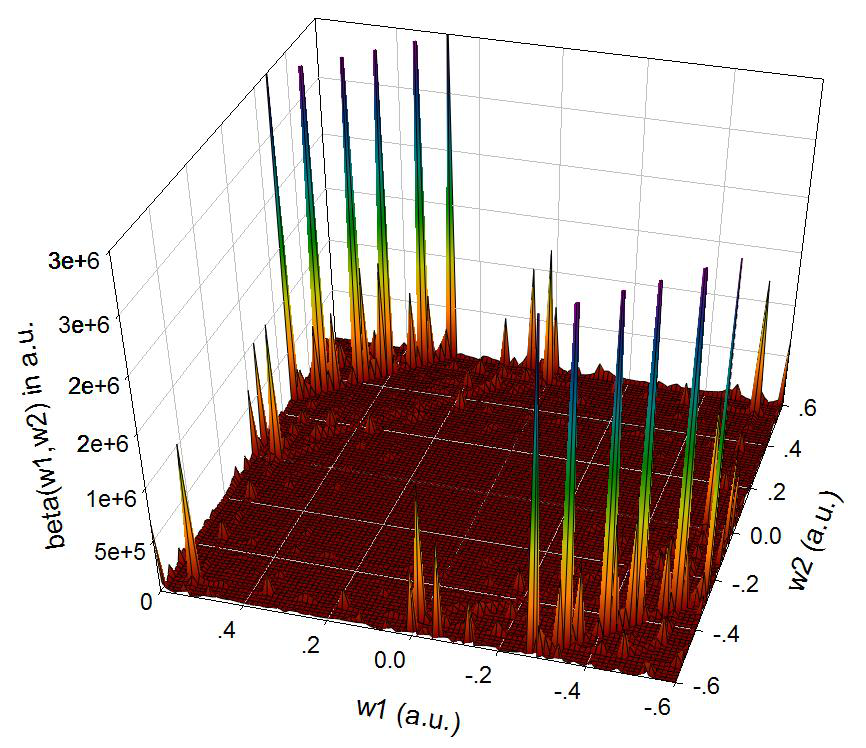
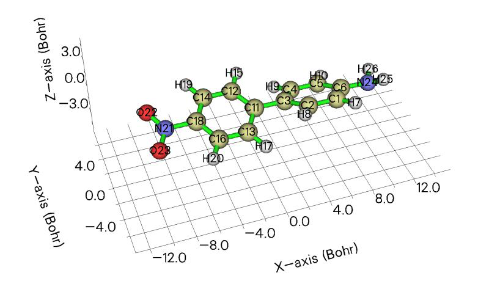
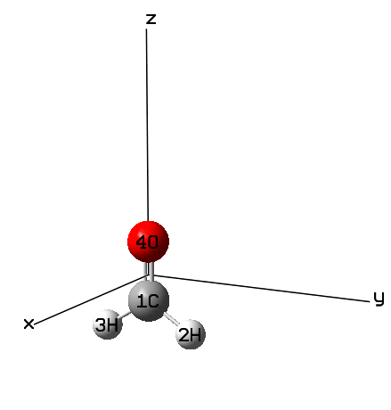
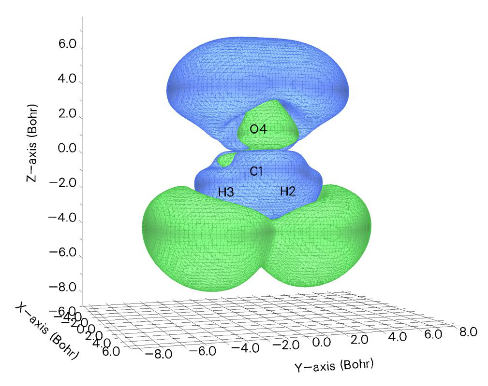
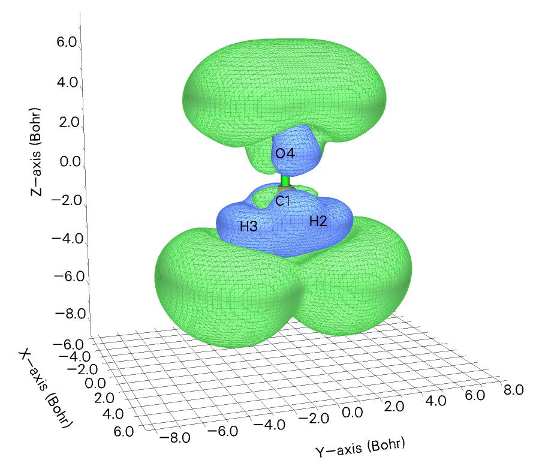
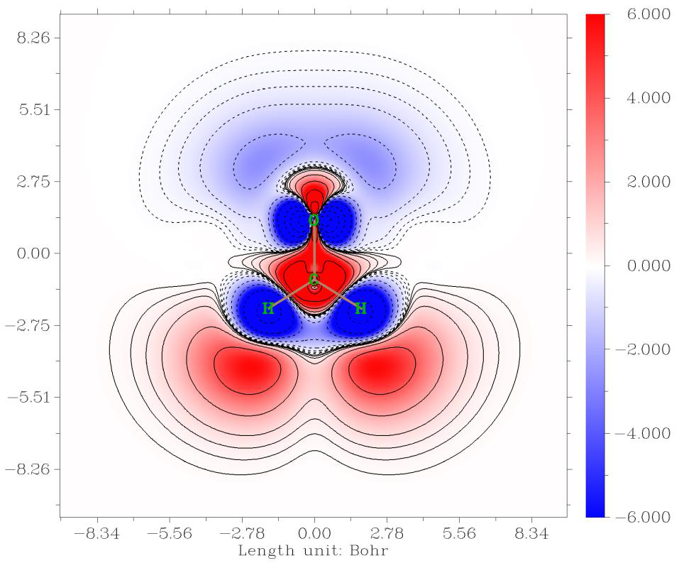
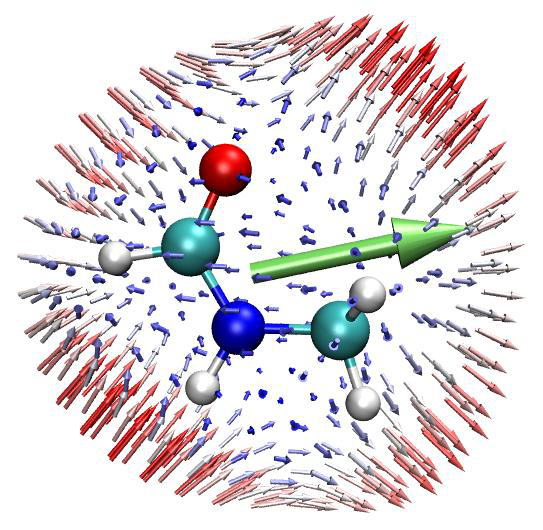
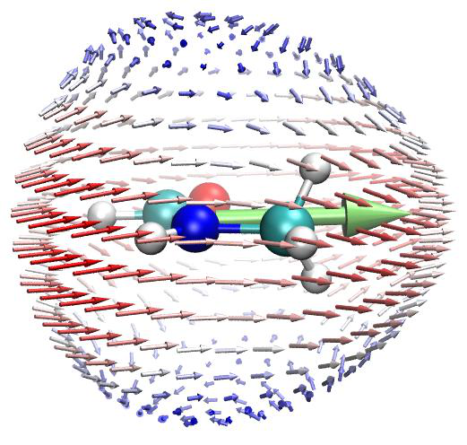
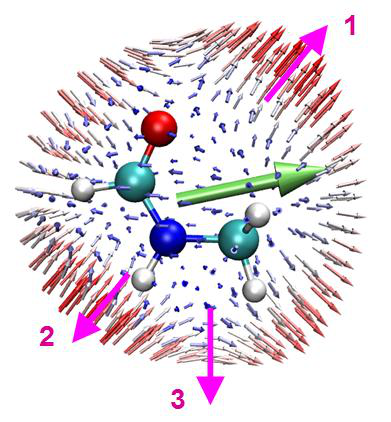
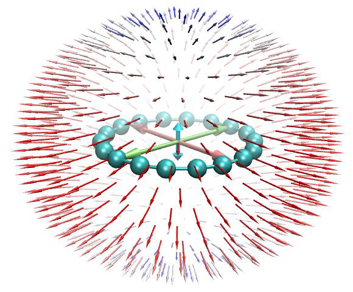

(超)极化率分析实例¶
Multiwfn manual, p.969–989.英文原文见同名 English 章节。 Images:
../imgs/.
关于过渡态结构波函数的 π 电子 Mayer 键级，请参见 4.100.22 节了解做法。你会发现 C1-C5 的 π Mayer 键级仅为 0.010，其大小已小到可以完全忽略。
4.24 (超)极化率分析实例¶
4.24.1 解析 Gaussian 的“polar”任务输出文件以获得¶
(超)极化率并计算相关量¶
如 3.27.1 节所述，Multiwfn 能够解析 Gaussian “polar”任务的概要输出信息，并将数据重组为更易读的格式，同时还会一并输出许多有用的量。本节给出一个例子。
在“examples\polar”文件夹中，NH3_polar_static.out 和 NH3_polar_dynamic.out 分别是使用常用交换相关泛函 PBE0 对 NH3 进行静态和频率相关(超)极化率计算的输出文件，相应的 Gaussian 输入文件也提供在同一文件夹中。计算中使用了带有丰富弥散函数的大基组(aug-cc-pVTZ)，注意弥散函数对获得合理的(超)极化率起着至关重要的作用，因此是绝对不可或缺的。
研究静态极化率和第一超极化率 首先，我们用 Multiwfn 从 NH3_polar_static.out 中解析数据。启动 Multiwfn 并输入
Multiwfn 交互
- examples\polar\NH3_polar_static.out 24 — (超)极化率分析((Hyper)polarizability analysis)
- 1 — 解析 Gaussian 的(超)极化率任务(Parse (hyper)polarizability task of Gaussian)
- 1 — 开始解析(Start parsing)。我们选择选项 1，因为当前级别的三阶导数(常规 DFT 泛函)得到了 Gaussian 的支持
现在你可以在屏幕上看到以下信息：
Dipole moment:
X,Y,Z= 0.000000 0.000000 -0.596558 Norm= 0.596558
Static polarizability:
XX= 13.692700
XY= 0.000000
YY= 13.693300
XZ= 0.000000
YZ= -0.000334
ZZ= 15.323600
Isotropic average polarizability: 14.236533
Isotropic average polarizability volume: 2.109636 Angstrom^3
Polarizability anisotropy (definition 1): 1.630600
Polarizability anisotropy (definition 2): 1.630600
Eigenvalues of polarizability tensor: 13.69270 13.69330 15.32360
Polarizability anisotropy (definition 3): 1.630600
Note: It is well known that the sign of hyperpolarizability of Gaussian 09/16 s
hould be inverted, the outputs shown below have already been corrected
Static first hyperpolarizability:
XXX= 0.000000
XXY= 12.903200
XYY= 0.000000
YYY= -12.900200
XXZ= 9.617100
XYZ= 0.000000
YYZ= 9.564710
XZZ= 0.000000
YZZ= 0.016285
ZZZ= 26.613200
Beta_X= 0.00000 Beta_Y= 0.01929 Beta_Z= 45.79501
Magnitude of first hyperpolarizability: 45.795014
Projection of beta on dipole moment: -45.795010
Beta || : -27.477006
Beta ||(z) : 27.477006
Beta _|_(z) : 9.159002
输出很容易理解，所有输出的量已在 3.27.1 节中详细解释。
研究频率相关极化率和超极化率 接下来，我们从 NH3_polar_dynamic.out 中提取频率相关(超)极化率。启动 Multiwfn 并输入
Multiwfn 交互
- examples\polar\NH3_polar_dynamic.out 24 — (超)极化率分析((Hyper)polarizability analysis)
- 1 — 解析 Gaussian 的(超)极化率任务(Parse (hyper)polarizability task of Gaussian)
- -1 — 让 Multiwfn 加载频率相关(超)极化率(Let Multiwfn load frequency-dependent (hyper)polarizability)
- 1 — 开始解析(Start parsing) Multiwfn 检测到有三组数据：
1 w= 0.000000 ( Static )
2 w= 0.065600 ( 695.04nm )
3 w= 0.071900 ( 634.14nm )
如果我们输入 2，则将加载并解析对应于 0.0656 a.u. 入射光的(超)极化率数据。
在输出偶极矩和极化率信息后，Multiwfn 会要求你选择要输出的超极化率类型：
1: Beta(-w;w,0) 2: Beta(-2w;w,w)
Note: Option 2 is meaningless if "DCSHG" keyword was not used
你可以根据需要选择其中之一。由于如
NH3_polar_dynamic.gjf 所见，我们使用的关键词是 polar=DCSHG，因此这两种类型都可用。
现在如果你选择选项 2 来解析 β(-2w;w,w)，不仅会显示第一超极化率，还会打印与超瑞利散射(HRS)相关的量，如下所示(详见 3.27.1 节)
<beta_ZZZ^2>: 8.12843560E+02
<beta_XZZ^2>: 1.45318790E+02
Hyper-Rayleigh scattering (beta_HRS): 30.954
Depolarization ratio (DR): 5.594
|<beta J=1>|: 59.743
|<beta J=3>|: 41.624
Nonlinear anisotropy parameter (rho): 0.697
Dipolar contribution to beta, phi_beta(J=1): 0.589
Octupolar contribution to beta, phi_beta(J=3): 0.411
< (beta_ZXZ+beta_ZZX)^2 - 2*betaZZZ*betaZXX >: 2.04387968E+02
接下来，如果你想研究散射强度随入射光偏振角的变化，应输入 y，然后输入一个起始角度，例如 -180。之后当前文件夹中会生成 HRS_angle.txt，其中包含
偏振角从 -180° 到 179°、步长为 1° 对应的散射强度。如果你用诸如 Origin 将数据绘制为“Polar theta(X) r(Y)”图，你将得到如下图所示，其中红色曲线在不同角度处的径向距离对应计算得到的 HRS 强度。相应的 Origin .opj 文件已作为 examples\polar\HRS_angle.opj 提供
90
1000 120 60
800
HRS intensity (a.u.) 600 400 200 0 -180 150 30 0
-150 -30
-120 -60
-90
研究第二超极化率
Gaussian 也能计算静态和动态第二超极化率(γ)。示例输入文件为 examples\polar\NH3_gamma.gjf，输出文件也在同一文件夹中提供。在该任务中使用了 polar=gamma 关键词，并指定了两个外场频率(532 nm
和 680 nm)。下面我说明使用 Multiwfn 解析 532 nm 处 γ(-2w;w,w,0) 数据的方法。
启动 Multiwfn 并输入 examples\polar\NH3_gamma.out
Multiwfn 交互
- 24 — (超)极化率分析((Hyper)polarizability analysis)
Multiwfn 交互
- 1 — 解析 Gaussian 的(超)极化率任务(Parse (hyper)polarizability task of Gaussian)
- -1 — 让 Multiwfn 加载频率相关(超)极化率(Let Multiwfn load frequency-dependent (hyper)polarizability)
- 7 — 该选项专门用于解析极化率和第二超极化率(This option is specific for parsing polarizability and second hyperpolarizability)
- 3 — 532 nm 此时屏幕上显示 532 nm 处的动态极化率及相关量。然后选择 2 以进一步解析 gamma(-2w;w,w,0)，你将看到
XXXX= 3.966470E+03
YXXX= 0.000000E+00
ZXXX= 8.493370E-05
XYXX=XXYX= 0.000000E+00
[...ignored]
ZZZZ= 3.204030E+04
Magnitude of gamma: 1.067181E+04
X component of gamma: 2.134993E+03
Y component of gamma: 2.134897E+03
Z component of gamma: 1.023580E+04
Average of gamma (definition 1), gamma ||: 1.450569E+04
Average of gamma (definition 2): 1.461464E+04
gamma _|_: 4.653651E+03
可以看出，γ 张量的所有分量都已非常清楚地显示，基于 γ 定义的一些量也一并给出，它们在 γ 研究中非常有用。注意上述数据是在输入朝向(input orientation)下给出的。
类似地，你可以用 Multiwfn 解析 gamma(-w;w,0,0)。如果你想解析 gamma(0;0,0,0)，在解析前不要选择选项 -1。
4.24.2 基于态求和(SOS)¶
方法研究极化率和超极化率¶
4.24.2.1 计算 NH3 的极化率和超极化率¶
在本例中，我将展示如何使用 Multiwfn 基于态求和(SOS)方法计算 HF 分子的极化率和超极化率。请确保你已阅读 3.27.2.1 节。
如 3.27.2.1 节所述，SOS 计算需要大量电子态的信息，包括电偶极矩、激发能以及这些态之间的跃迁偶极矩。通常这些信息可通过 ZINDO、CIS、TDHF 和 TDDFT 计算获得。在本例中我们使用非常流行的 CIS 方法。根据我的经验，更昂贵的 TDHF 和 TDDFT 方法虽然能给出更准确的激发能，但与 SOS 技术联用时，不一定比 CIS 给出更好的(超)极化率。
准备工作 在本例中我们使用 Gaussian 程序进行 CIS 计算。然而，Gaussian 本身无法输出 SOS 计算所需的全部信息。虽然对于 CIS(和 ZINDO)有一个
关键词 alltransitiondensities，它使 Gaussian 输出每对激发态之间的跃迁密度矩，但所有态的电偶极矩仍无法在一次计算中获得。幸运的是，我们可以使用 Multiwfn 非常强大的电子激发分析模块，基于 Gaussian 或 ORCA 程序的 CIS/TDHF/TDDFT 任务输出文件生成 SOS 所需的全部信息。
首先，用 Gaussian 运行 examples\NH3_SOS.gjf 以产生输出文件 NH3_SOS.out，并用 formchk 工具将检查点文件转换为 NH3_SOS.fch。如果你手头没有 Gaussian，可以直接在 http://sobereva.com/multiwfn/extrafiles/NH3_SOS.rar 下载它们。
由于 SOS 结果常常随考虑的激发态数目收敛较慢，在本例中我们产生了高达 150 个激发态，以充分避免截断误差。当然，采用更多激发态在 CIS 计算和随后 Multiwfn 中的 SOS 计算中都需要更多计算时间。在大多数实际研究中，100 个态一般已足够大，甚至 70 个也常常足以提供可用的结果。超极化率、尤其是高阶超极化率的计算对基组质量有非常严格的要求，丰富的弥散函数是绝对不可或缺的。在本例中我们采用 def2-TZVPPD (J. Chem. Phys., 133, 134105)，这是一个为分子响应性质计算优化的高质量基组。由于它不是当前版本 Gaussian 的内置基组，它取自 BSE 网站(https://www.basissetexchange.org)。关键词 IOp(9/40=5) 很重要，因为在 ZINDO/CIS/TDHF/TDDFT 任务中，默认情况下 Gaussian 只输出绝对值大于 0.1 的跃迁系数，而 IOp(9/40=5) 将阈值降至 0.00001，从而可以输出多得多的系数，进而我们下一步可用 Multiwfn 获得准确的跃迁偶极矩。值得注意的是，你也可以用 TDHF 或 TDDFT 代替 CIS，例如你可以写 #P TD(nstates=150) CAM-B3LYP/gen IOp(9/40=5)。
Multiwfn 交互
- 启动 Multiwfn 并输入以下命令 C:\NH3_SOS.fch 18 — 电子激发分析模块(Electron excitation analysis module)
- 5 — 计算所有激发态的跃迁偶极矩和偶极矩(Calculate transition dipole moments and dipole moment for all excited states) C:\NH3_SOS.out
- 3 — 生成 SOS.txt(Generate SOS.txt) 当前文件夹中生成的 SOS.txt 文件包含 SOS (超)极化率计算所需的全部信息。该文件可直接被 Multiwfn 的 SOS 模块使用。
重启 Multiwfn 并输入 SOS.txt
Multiwfn 交互
- 24 — (超)极化率分析((Hyper)polarizability analysis)
- 2 — 用态求和(SOS)方法研究(超)极化率(Study (hyper)polarizability by sum-over-states (SOS) method) 注意 SOS 模块中使用的单位均为原子单位。
极化率(alpha)的计算
现在，选择 1 并输入 0 以计算静态极化率 α(0;0)，结果为
1 2 3
1 14.610682 0.000000 0.000000
2 0.000000 14.610682 0.000000
3 0.000000 0.000000 14.552483
Isotropic average polarizability: 14.591283
Isotropic average polarizability volume: 2.162205 Angstrom^3
Polarizability anisotropy (definition 1): 0.058199
Eigenvalues: 14.552483 14.610682 14.610682
Polarizability anisotropy (definition 2): 0.029100
可以看出，不仅输出了极化率张量，还输出了一些相关量。它们的定义见 3.100.20 节。我们得到的各向同性平均极化率为 14.59，与实验测定值 14.56 完全吻合！(Mol.
Phys., 33, 1155)
然后我们计算动态极化率 α(-ω;ω)，并假设外场频率为 0.0719 a.u.。再次选择选项 1，输入 0.0719，从输出可以看到 ω=0.0719 处的动态
各向同性极化率为 14.86，略大于静态值。
第一超极化率(beta)的计算
接下来，我们计算第一超极化率并考虑静态情形 β(0;0,0)。选择选项 2 并输入 0,0。只有沿偶极矩方向的 β 分量，即 β||，才是我们特别感兴趣的，因为只有这个量能由实验测定。从
输出中我们发现 β||(0;0,0) 为 -38.98。相应的实验值暂无，但该值接近 CCSD(T) 方法计算的高精度值(-34.3，见 J. Chem. Phys., 98, 3022 (1993))。
随后，我们计算 ω=0.0656 a.u. 处的 β(-2ω;ω,ω)。再次选择选项 2 并输入 0.0656, 0.0656，将两个外场的频率都设为 0.0656 a.u.。这次 β|| 值为 -49.69，同样与实验测定值 -48.9±1.2 非常吻合(见 A. Hernández-Laguna et al. (eds.), Quantum Systems in Chemistry and Physics, Vol. 1, p111)
注：虽然在本例中我们的 SOS/CIS 计算与参考值惊人地吻合，但对其它体系并不总是如此。SOS/CIS 方法有时会严重高估 β 值！
第二超极化率(gamma)的计算
最后，我们计算第二超极化率 γ。选择 3 并输入 0,0,0 以假设静态电场。由于 γ 的计算明显比 β 更耗时，Multiwfn 不会自动使用所有态，而是允许你设置要考虑的态数目。原则上数值越大结果越好，但当然计算耗时也更多。这里，我们输入 150 以使用所有态。稍后，结果显示在屏幕上，γ 的平均
值为 928.74。注意该值可能不准确(没有参考值，所以我不确定这是否为好结果)，主要原因之一是电子
激发计算中使用的基组不够大。γ 的准确计算通常需要像 d-aug-cc-pVTZ(或更好的基组)这样的基组，相比常用的 aug-cc-pVTZ，它多了一层弥散函数。
Multiwfn 也能计算第三超极化率 δ(-ω;ω1,ω2,ω3,ω4)，其中 ω=ω1+ω2+ω3+ω4，但在本例中我们不做，因为该量相当不重要，且当考虑的态数目较大时计算极其昂贵；此外，计算中必须采用极高质量的基组……
(超)极化率随考虑态数目的变化 SOS 计算中非常重要的一点是所用的态数目必须足够高；换句话说，如果你的 SOS 研究中涉及 n 个态，(超)极化率随态数目的变化必须在 n 之前已收敛，否则必须增大 n。利用 Multiwfn 我们可以很方便地检查是否满足收敛条件。这里我们检查
静态 β 的收敛性。选择选项 6 并输入 0,0，稍后，结果将导出到当前文件夹中的 beta_n.txt 和 beta_n_comp.txt，每个列的含义在屏幕上已清楚标明。然后你可以用你喜欢的工具绘制 beta_n.txt 中的数据。如果你是 Origin 用户，可以直接将该文件拖入 Origin 窗口并绘制为曲线图。下图
显示了静态 β|| 以及静态各向同性平均极化率 <α> 随考虑态数目的变化。
16
14 -20
12 -30
10
<α> 8 6 β|| -40 -50
4 -60
2
-70
0204060801001201400 020406080100120140
态数目(Number of states) 显然这两个量在 n=100 时已基本收敛。由于我们在计算中采用了 150 个态，因态截断引起的误差可以安全忽略。从图中还可以看出，若将态数目截断在 70，结果在定性上仍然正确。 态数目(Number of states)
你也可以类似地用选项 5 和 7 分别研究 α 和 γ 的收敛行为。
(超)极化率随外场频率的变化 在 Multiwfn 的 SOS 模块中，还可以很容易地研究动态(超)极化率随外场频率的变化。例如，我们研究
β(-ω1;ω1,0) 随 ω1 从 0 到 0.5 a.u.、步长 0.01 的变化。写一个纯文本文件，每行对应一对 ω1, ω2(本例中 ω2 固定为零)，例如
0.00 0
0.01 0
0.02 0
...
0.5 0
提示：为方便起见，你可以利用 Microsoft Excel 程序生成频率列表，并将表格保存为 .txt 文件(你可以选择如“Text (tab delimited)”，但不要选“Unicode text”)。然后选择选项 16，输入该纯文本文件的路径，将在每对频率处计算 β，结果将输出到当前文件夹中的 beta_w.txt 和 beta_w_comp.txt，数据的每列含义在屏幕上已清楚标明。这些文件中的数据可
直接用 Origin 绘制为曲线图，例如 β(-ω1;ω1,0) 的大小如下所示：
110000
100000
90000
β(−ω1;ω1,0) 的大小(Magnitude of β (−ω1;ω1,0)) 80000 70000 60000 50000 40000 30000 20000
10000
0
0.00.10.20.30.40.5
外场频率 ω1(Frequency of external field ω1)
类似地，你也可以用选项 15 和 17 分别研究 α 和 γ 随外场频率的变化。
同时扫描 β(-(ω1+ω2);ω1,ω2) 的 ω1 和 ω2 通过 SOS 模块的子功能 19，你还可以同时扫描 β(-(ω1+ω2);ω1,ω2) 的 ω1 和 ω2。例如，我们在 SOS 模块中输入以下命令
19
Multiwfn 交互
- -0.6,0.6,100 — ω1 的下限、上限和步数(Lower limit, upper limit and number of steps of ω1)(单位 a.u.)
- -0.6,0.6,100 — ω2 的下限、上限和步数(Lower limit, upper limit and number of steps of ω2)(单位 a.u.) 稍后，当前文件夹中生成 beta_w.txt 和 beta_w_comp.txt，文件中
各列的含义在屏幕上已清楚说明。为了直观研究总 β 如何随 ω1 和 ω2 的变化而变化，你可以以第一、第二和第 7 列分别作为 X、Y 和 Z 数据绘制浮雕图。下面所示的图是用 Sigmaplot 绘制的：
这类图展示了当前体系的单光子共振 β(-ω1;ω1,0) 或 β(-ω2;0,ω2)、和频

产生和差频产生特征。在其中 ω1 和 ω2 之一为零的位置出现大
峰意味着在相应频率处有显著的电光 Pockels 效应，在 ω1=ω2 的频率处出现大峰表明在该频率处有强的二次谐波产生(SHG)效应，在 ω1= -ω2 的频率处出现大峰表明在该频率处有显著的光整流效应。关于这类图的讨论实例见 ACS Appl. Nano Mater., 2, 1648 (2019)。
4.24.2.2 对 NH2-biphenyl-NO2 的第一¶
超极化率进行二能级和三能级模型分析
注：本节的中文版是我的博客文章“使用 Multiwfn 进行第一超极化率的二能级和三能级模型分析”(http://sobereva.com/512)。
在超极化率计算研究文献中，常采用二能级模型来阐明影响第一超极化率的主要因素，该分析
也为类似体系间 β 的差异提供了清晰的洞见。Multiwfn 中实现的三能级模型是二能级模型的自然扩展，将两个激发态纳入考虑。请先阅读 3.27.2.2 节以获得关于二能级和三能级模型的基本知识。本节我将说明进行这些分析的基本步骤
需要特别强调的是，二能级或三能级分析只有在这两个条件满足时才有用：
-
只有 β 的一个分量(即 βXXX 或 βYYY 或 βZZZ)起主导作用。该分量应作为分析对象
-
一个激发态(对二能级模型)或两个激发态(对三能级模型)对 β 的贡献远大于所有其它激发态
大多数给体-π-受体型体系很好地满足上述两个条件。本节我们以典型的给体-π-受体体系 NH2-biphenyl-NO2 为例。“examples\excit”文件夹中的 D-pi-A.fchk 和 D-pi-A.out 是由 Gaussian 在 CAM-B3LYP/6-31G(d) 水平上对该体系进行 TDDFT 任务产生的，得到了五个最低单重激发态。值得注意的是，若没有足够的弥散函数，(超)极化率无法达到定量准确水平；然而，我们目前的目的只是用二能级和三能级
模型非常粗略地讨论影响 β 的因素，因此用这两个文件进行分析是可以接受的。
准备输入文件 启动 Multiwfn 并输入以下命令 examples\excit\D-pi-A.fchk
Multiwfn 交互
- 18 — 电子激发分析模块(Electron excitation analysis module)
- 5 — 计算所有激发态的跃迁偶极矩和偶极矩(Calculate transition dipole moments and dipole moment for all excited states) examples\excit\D-pi-A.out
- 3 — 生成 SOS.txt(Generate SOS.txt)，其中包含二能级或三能级分析所需的全部信息 现在我们已准备好进行二/三能级分析。在此之前，我们需要
确认应研究 β 的哪个分量。D-pi-A.fchk 的分子几何如下所示(由主功能 0 显示)。可以看出，给体-π-受体路径方向与 X 轴完全平行，因此预计当前体系只有 βXXX 是显著的。
二能级分析 重启 Multiwfn 并输入 SOS.txt
Multiwfn 交互
- 24 — (超)极化率分析((Hyper)polarizability analysis)
- 2 — 用态求和(SOS)方法研究(超)极化率(Study (hyper)polarizability by sum-over-states (SOS) method)
20 // β 的二能级或三能级模型分析(Two- or three-level model analysis of β) 现在 Multiwfn 打印所有激发态的关键信息，它们与二能级和三能级分析密切相关：
Excitation energy (E), transition electric dipole moment between ground state and excited
state, and variation of dipole moment of excited states w.r.t. ground state
Trans. dipole moment (a.u.) Var. dipole moment (a.u.)
State E(eV) X Y Z Tot X Y Z Tot
1 3.9069 0.444 -0.000 -0.002 0.444 -1.010 -0.001 0.001 1.010
2 4.0624 2.528 -0.003 -0.007 2.528 6.563 -0.015 -0.047 6.501
3 4.4166 -0.003 -0.002 -0.023 0.024 -1.081 0.002 0.002 1.077
4 4.7912 0.001 0.341 -0.013 0.341 1.845 -0.006 -0.015 1.823
5 4.8872 -0.004 0.192 -0.171 0.257 0.993 -0.019 -0.049 0.925
因为激发态 2 的跃迁偶极矩大小和偶极矩变化远大于其它态，同时激发态 2 的激发能较低，因此该态可明确判定为所谓的关键态。
接下来，我们输入 1-5 对从 1 到 5 的每个激发态进行二能级分析，你将看到
beta evaluated by two-level model: (a.u.)
# 1: XXX= -58.05 YYY= -0.00 ZZZ= 0.00 Norm= 58.05
# 2: XXX= 11289.12 YYY= -0.00 ZZZ= -0.00 Norm= 11289.12
# 3: XXX= -0.00 YYY= 0.00 ZZZ= 0.00 Norm= 0.00
# 4: XXX= 0.00 YYY= -0.15 ZZZ= -0.00 Norm= 0.15
# 5: XXX= 0.00 YYY= -0.13 ZZZ= -0.27 Norm= 0.30
显然，只有激发态 2 对 βXXX 有显著贡献。
我们可以让 Multiwfn 打印关于激发态 2 的更详细信息。输入以下命令

Multiwfn 交互
- 20 — β 的二能级或三能级模型分析(Two or three-level model analysis of β)
- 2 — 选择激发态 2 进行二能级模型分析(Select excited state 2 for two-level model analysis) 输出的信息如下所示
Excited state 2
Excitation energy 0.149290 a.u. 4.0624 eV
Transition dipole moment (a.u.)
X= 2.527776 Y= -0.003088 Z= -0.007328 Total= 2.527789
Oscillator strength
X= 0.635943 Y= 0.000001 Z= 0.000005 Total= 0.635949
Variation of dipole moment (a.u.)
X= 6.562899 Y= -0.015345 Z= -0.046710 Total= 6.563083
beta evaluated by two-level model: (a.u.)
XXX= 11289.1185 YYY= -0.0000 ZZZ= -0.0007 Norm= 11289.1185
二能级模型中涉及的所有项已在上面给出，二能级模型的表达式见 3.27.2.2 节。如果你有一个类似体系，例如当前体系中的两个苯环被替换为三个苯环，你可以用上述量
根据二能级模型研究各种因素如何导致 βXXX 的差异。
三能级分析 我们还可以进行三能级模型分析。在 Multiwfn 窗口中，我们输入
Multiwfn 交互
- 20 — 再次进行 β 的二能级或三能级模型分析(Perform two- or three-level model analysis of β again)
- 1,2 — 选择激发态 1 和 2 进行三能级模型分析(Choose excited states 1 and 2 for the three-level model analysis) 你将看到以下输出
Excited state 1
Excitation energy 0.143576 a.u. 3.9069 eV
Transition dipole moment (a.u.)
X= 0.444412 Y= -0.000436 Z= -0.001817 Total= 0.444416
Oscillator strength
X= 0.018904 Y= 0.000000 Z= 0.000000 Total= 0.018905
Variation of dipole moment (a.u.)
X= -1.009787 Y= -0.000610 Z= 0.000608 Total= 1.009787
Excited state 2
Excitation energy 0.149290 a.u. 4.0624 eV
Transition dipole moment (a.u.)
X= 2.527776 Y= -0.003088 Z= -0.007328 Total= 2.527789
Oscillator strength
X= 0.635943 Y= 0.000001 Z= 0.000005 Total= 0.635949
Variation of dipole moment (a.u.)
X= 6.562899 Y= -0.015345 Z= -0.046710 Total= 6.563083
Transition dipole moment between states 1 to 2: (a.u.)
X= 1.475397 Y= -0.001634 Z= -0.008677 Total= 1.475423
Individual contribution of excited state 1 to beta: (a.u.)
XXX= -58.0482 YYY= -0.0000 ZZZ= 0.0000 Norm= 58.0482
Individual contribution of excited state 2 to beta: (a.u.)
XXX= 11289.1185 YYY= -0.0000 ZZZ= -0.0007 Norm= 11289.1185
Coupling contribution of the two excited states to beta: (a.u.)
XXX= 927.8987 YYY= -0.0000 ZZZ= -0.0001 Norm= 927.8987
beta evaluated by three-level model: (a.u.)
XXX= 12158.9690 YYY= -0.0000 ZZZ= -0.0007 Norm= 12158.9690
可以看到，三能级模型分析中涉及的所有项都已给出。我们
还发现激发态 1 对 βXXX 的单独贡献很小，两态间耦合项也可忽略，表明对当前体系采用二能级模型分析已完全足够，将更多态纳入分析并不能提供额外洞见。
激发态 1 对应的单独贡献相当低的原因
很容易理解。根据二能级模型，对给定 β 分量的贡献与该分量上偶极矩变化和跃迁偶极矩平方成正比。与激发态 2 相比，激发态 1 的这两个量都明显更小。
提示：在某些情况下，电子激发任务的输出文件可能包含大量态，而进行二能级或三能级模型分析时我们通常只需要最初几个低激发态。为了显著降低在这种情况下生成 SOS.txt 的成本，你可以适当设置 settings.ini 中的“maxloadexc”参数。例如，输出文件包含多达 100 个激发态，但预计感兴趣的态不会高于第 5 个激发态，因此可将“maxloadexc”设为 5，则只有前 5 个激发态会被识别、加载并参与计算。
4.24.3 研究(超)极化率密度的例子¶
本节的中文版是我的博客文章“使用 Multiwfn 极其方便地绘制(超)极化率密度以及三维空间对(超)极化率的贡献”(http://sobereva.com/683)。
请先阅读 3.27.3 节以获得关于(超)极化率密度和空间对(超)极化率贡献分析的基本知识。下面我们将研究典型小分子 H2CO 的第二超极化率密度。极化率密度和第一超极化率密度也可用几乎完全相同的方式研究，你只需在 Multiwfn 界面中选择相应量即可。
进行这类分析时必须明确分子的朝向，当前情况下 C=O 键平行于 Z 轴，如下所示。在本例中我们重点研究
(3))和空间对 γzzzz(第二超极化率的 ZZZZ 分量)的贡献，即 −𝑧𝜌𝑧𝑧𝑧 第二超极化率密度的 ZZZ 分量(𝜌𝑧𝑧𝑧 (3)。
在进行超极化率密度分析之前，建议先用 Gaussian 做一次常规
静态 γ 计算，以便判断我们的超极化率密度分析是否合理。该任务的 Gaussian 输入和输出文件已作为“examples\polar\polardens”文件夹中的 gamma.gjf 和 gamma.out 提供，采用常用的 PBE0/aug-
cc-pVTZ 水平。如输出文件末尾所见，γZZZZ 为 0.309211D+04 a.u.(即 3092.1 a.u.)。该任务所用几何在 B3LYP/def-TZVP 水平下优化得到。
准备工作 启动 Multiwfn 并输入 examples\polar\polardens\H2CO.xyz //Multiwfn 将从该文件加载几何，其坐标与 gamma.gjf 相同
24 //(超)极化率分析((Hyper)polarizability analysis) 3 //(超)极化率密度分析((Hyper)polarizability density analysis) 3 //研究第二超极化率密度和空间对第二超极化率的贡献(Study second hyperpolarizability density and spatial contribution to second hyperpolarizability)
3 //Z 方向(Z direction) 1 //生成不同外电场下单点任务的 Gaussian 输入文件(Generate Gaussian input files of single point task under different external electric fields) [直接按 ENTER 键(Press ENTER button directly)] //使用 0 和 1 分别作为净电荷和自旋多重度(Use 0 and 1 as net charge and spin multiplicity, respectively) 现在 Multiwfn 在当前文件夹中生成 Z-2.gjf、Z-1.gjf、Z+1.gjf 和 Z+2.gjf。如果你用文本编辑器打开它们，会发现它们对应于 PBE0/aug-cc-pVTZ 水平下不同电场时的单点任务，同时当前文件夹中会生成与输入文件同名的 .wfx 文件(一种波函数格式)。有限电场的大小为 0.003 a.u.，因此例如 Z+2.gjf 对应于施加大小为 0.003*2 = 0.006 a.u. 的 Z 方向外电场。文件中的“nosymm”关键词很重要，它可防止 Gaussian 在计算中自动重定向分子。如果你想用其它计算水平和设置，可手动修改 .gjf 文件中的关键词。
用 Gaussian 运行 .gjf 文件(你可用“examples”文件夹中的 runall.sh 脚本调用 Gaussian 运行当前文件夹中的所有文件)。然后你会在当前文件夹中发现 Z-2.wfx、Z-1.wfx、Z+1.wfx 和 Z+2.wfx。
接下来，在 Multiwfn 中输入以下命令 2 //加载不同外电场下单点任务的 .wfx 文件(Load .wfx files of single point task under different external electric fields) [直接按 ENTER 键(Press ENTER button directly)] //假设 .wfx 文件在当前文件夹中(Assume that the .wfx files are in current folder) 如屏幕提示，所有需要的 .wfx 文件已被 Multiwfn 找到，并出现一个新界面

出现，你可以选择计算格点数据或绘制平面图。显然，界面中的“第二超极化率密度(second hyperpolarizability density)”和“空间对第二超极化率的贡献(spatial contribution to second hyperpolarizability)”在
当前情况下分别指 𝜌𝑧𝑧𝑧 (3) 和 −𝑧𝜌𝑧𝑧𝑧 (3)。
可视化等值面图
(3)。为此，我们输入 1 //生成第二超极化率密度的格点数据(Generate grid data of second hyperpolarizability density) 2 //中等质量格点(Medium-quality grid) 1 //可视化等值面图(Visualize isosurface map) 我们首先可视化 𝜌𝑧𝑧𝑧 的等值面图
将等值设为 0.5 后，你将看到 𝜌𝑧𝑧𝑧 (3) 的等值面图：
然而，仅从该图仍难讨论各空间区域对
γZZZZ 的贡献，因为 -z 因子尚未考虑在内。为获得 −𝑧𝜌𝑧𝑧𝑧 (3)，我们关闭 GUI 窗口，并输入以下命令
0 //返回(Return) 2 //生成空间对第二超极化率贡献的格点数据(Generate grid data of spatial contribution to second hyperpolarizability) 2 //中等质量格点(Medium-quality grid) 从屏幕可以看到当前格点数据的积分为 3008.2 a.u.，接近 examples\polar\polardens\gamma.out 中所示的 γZZZZ 值 3092.1 a.u.，表明 −𝑧𝜌𝑧𝑧𝑧 的格点数据
(3)确实合理(若使用更高质量格点并在设置格点时增大默认扩展距离，积分将更接近 3092.1 a.u.)。
现在选择选项 2 可视化等值面图。将等值设为 2 后，你将看到
如下 −𝑧𝜌𝑧𝑧𝑧 (3) 的等值面图：

图中，绿色(蓝色)等值面包围的区域对 γZZZZ 有正(负)贡献。可以看出，在分子价层区域，贡献基本为负，但在分子两端贡献为显著正值，且大小明显超过负区域，这就是当前体系 γZZZZ 为明显正值的原因。显然通过这样一幅图，你可以立即解释 γ 的某个分量为何大或小，或为何为正或负。毫无疑问这种分析在研究(超)极化率的内在特征时极其有用！
绘制平面图
(3)，从中我们可以更好地理解该函数在特定平面内的详细分布。输入 0 返回上一级菜单，然后输入 接下来，我们绘制 𝜌𝑧𝑧𝑧 的平面图
3 //绘制第二超极化率密度的平面图(Plot plane map of second hyperpolarizability density) 1 //色彩填充图(Color-filled map) [直接按 ENTER 键(Press ENTER button directly)] //使用默认 200200 格点(Use the default 200200 grid points) 3 //YZ 平面(YZ plane) 0 //X=0 关闭图形，然后输入以下命令微调图形效果 19 //设置颜色过渡(Set color transition) 8 //蓝-白-红(Blue-White-Red) 2 //显示等值线(Enable showing contour lines) 3 //修改等值线设置(Change contour line setting) 4 //删除部分等值线(Delete some contour lines)(本例中我们只想保留值相对较大的等值线)
32-37 4 //删除部分等值线(Delete some contour lines) 1-6 1 //保存设置并返回(Save setting and return) 4 //显示原子标签和参考点(Enable showing atom labels and reference point) 12 //深绿(Dark green)

8 //显示化学键(Enable showing bonds) 14 //棕色(Brown) 1 //设置上下限(Set lower & upper limits) -6,6 -1 //重绘(Replot) 你将看到如下图所示，效果相当不错
选择“-5 返回主菜单(Return to main menu)”后，你就可以选择“4 绘制空间对第二超极化率贡献的平面图(Plot plane map of spatial contribution to second hyperpolarizability)”以类似方式绘制 −𝑧𝜌𝑧𝑧𝑧 (3)。
获得原子对(超)极化率的贡献 得益于 Multiwfn 的灵活性，可通过在每个原子空间中积分相应的(超)极化率密度格点数据，轻松获得原子对(超)极化率的贡献。通常，建议采用模糊原子空间，因为
成本很低。这里我们将通过积分 -zρ(3)ZZZ 的格点数据计算原子对 γZZZZ 的贡献。
(3)，我们选择选项“2 生成空间对第二超极化率贡献的格点数据(Generate grid data of spatial contribution to second hyperpolarizability)”后再选“2 将格点数据导出为 cube 文件(Export grid data as cube file)”，然后直接按 ENTER 键将格点数据导出为当前文件夹中的 grid.cub。然后将 settings.ini 中的“iuserfunc”设为 -1，使自定义函数对应于基于所加载格点数据的插值函数。重启 Multiwfn，加载 grid.cub，然后输入以下命令： 在前面生成 −𝑧𝜌𝑧𝑧𝑧 的格点数据
15 //模糊原子空间分析(Fuzzy atomic space analysis) 1 //在每个原子空间中积分实空间函数(Integrate a real space function in every atomic space) 100 //自定义函数(User-defined function) 结果为
Atomic space Value % of sum % of sum abs
1(C ) 28.87467715 0.962679 0.962679
2(H ) 950.91673574 31.703459 31.703459

3(H ) 949.91946330 31.670210 31.670210
4(O ) 1069.69915961 35.663652 35.663652
Summing up above values: 2999.41003579
Summing up absolute value of above values: 2999.41003579
“Value”标签下的数值是原子对 γZZZZ 的贡献， “% of sum”下的数值是百分比贡献。从数据可以清楚地看出，两个氢和氧
对 γZZZZ 有主要贡献。所有数值的总和为 2999.4 a.u.，这与 Gaussian 的 polar=gamma 任务输出的 γZZZZ 值（3092.1 a.u.）也相当接近，表明该数据是有意义的。
4.24.5 使用单位球表示直观研究¶
（超）极化率的例子¶
注：本节的中文版是笔者的博客文章“使用 Multiwfn 以单位球表示图形化研究（超）极化率张量”（http://sobereva.com/547，中文），其中包含更多讨论。
如果你对单位球和矢量表示分析（超）极化率还不熟悉，请先阅读第 3.27.5 节。在本节中，我将以 CH3NHCHO 和 cyclo[18]carbon 为例，展示如何将 Multiwfn 与 VMD 可视化软件结合使用来实现这类分析，并展示这些方法的 usefulness（有用性）。
4.24.5.1 CH3NHCHO 的一阶超极化率¶
在本节中，我们分析 CH3NHCHO 在 1030 nm 处的 SHG（二次谐波产生）类型的动态一阶
超极化率（β），我们的目的之一是重现单位球表示方法原始论文（J. Comput. Chem., 32, 1128 (2011)）中的图 2(e)。我们将使用与作者相同的计算级别，即几何优化用 B3LYP/6-311+G，超极化率计算用 HF/6-311++G。作者
使用的是 GAMESS-US 程序，但我们将使用 Gaussian 来计算 β。
首先，使用 Gaussian 运行 examples\polar\CH3NHCHO\polar.gjf，其内容如下所示
#P HF/6-311++g(d,p) polar=DCSHG CPHF=rdfreq
[blank line]
B3LYP/6-311++G** opted
[blank line]
0 1
[coordinate optimized at B3LYP/6-311++G** level]
[blank line]
450nm 1030nm
在这个输入文件中，polar=DCSHG 要求 Gaussian 计算 SHG 类型的超极化率，
即 β(-2ω;ω,ω)。入射光的两个频率从输入文件末尾读入，这由 CPHF=rdfreq 关键词所要求。注意必须使用 #P，否则 Multiwfn 将无法从输出文件中解析（超）极化率。
现在我们使用 Multiwfn 来解析输出文件并将 β 导出为 .txt 文件。启动 Multiwfn 并
输入以下命令
Multiwfn 交互
- examples\polar\CH3NHCHO\polar.out 24 — （超）极化率分析 ((Hyper)polarizability analysis)
- 1 — 解析 Gaussian 的 “polar”任务 (Parse "polar" task of Gaussian。PS：如果你对该功能不熟悉，请参阅第 3.27.1 节的介绍和 4.24.1 节的例子）
Multiwfn 交互
- -1 — 要求 Multiwfn 解析动态（超）极化率 (Request Multiwfn to parse dynamic (hyper)polarizability)
- -4 — 要求 Multiwfn 将解析得到的（超）极化率导出为 .txt 文件 (Request Multiwfn to export parsed (hyper)polarizability as .txt file)
- 1 — 开始解析（超）极化率 (Start parsing (hyper)polarizability)
- 2 — 如屏幕所示，第二个选项对应于 1030 nm 的情形 (As shown on screen, the second option corresponds to 1030 nm case)
Multiwfn 交互
- 2 — 载入 SHG 形式的 β (Load SHG form of β)
- n — 不进行与超瑞利散射相关的分析 (Do not perform analysis related to hyper-Rayleigh scattering)
现在对应于 1030 nm 的极化率张量（α）和 SHG 形式的 β 已分别被导出到当前文件夹下的 alpha.txt 和 beta.txt 中。
如第 3.27.5 节所述，要实现单位球表示，一般应让 Multiwfn 载入一个包含原子坐标的文件，以便 Multiwfn 能确定合适的球半径。这里我们让 Multiwfn 直接从 Gaussian 输出文件中载入原子坐标。为此，我们将 settings.ini 中的 “iloadGaugeom”改为 2，这表示要求 Multiwfn 从所载入的 Gaussian 输出文件中以标准取向载入原子坐标。然后启动 Multiwfn 并输入
Multiwfn 交互
- examples\polar\CH3NHCHO\polar.out 24 — （超）极化率分析 ((Hyper)polarizability analysis)
- 5 — 通过单位球和矢量表示可视化（超）极化率 (Visualize (hyper)polarizability via unit sphere and vector representations) 现在你可以找到许多用于调节绘图参数的选项，如球上箭头的半径和长度、箭头数目等，目前我们使用默认设置。我们选择
选项 2，从屏幕提示可以发现，由于当前文件夹中已存在 beta.txt，Multiwfn 会自动从其中载入 β 张量，然后在当前文件夹下导出 beta.tcl，它对应于单位球表示的 VMD 绘图脚本。你还可以发现当前文件夹中已导出了 beta_vec.tcl，它是矢量表示的 VMD 绘图脚本。
由于我们还想在 VMD 中显示分子结构，我们需要生成一个 VMD 可识别的包含原子信息的文件，因此我们输入
Multiwfn 交互
- 0 — 退出当前功能 (Exit current function)
- 0 — 返回主菜单 (Return to main menu)
- 100 — 其他功能（第一部分） (Other function (Part 1))
- 2 — 生成新文件 (Generate new file)
- 1 — 将当前几何结构导出为 .pdb 文件 (Export current geometry as .pdb file) CH3NHCHO.pdb 现在我们在当前文件夹中有了 CH3NHCHO.pdb，就可以关闭 Multiwfn 程序了。将当前文件夹中的 beta.tcl 和 beta_vec.tcl 移到 VMD 安装文件夹，然后启动 VMD 并在 VMD 命令行窗口中输入 source beta.tcl 和 source beta_vec.tcl 以依次运行这两个绘图脚本。接着，将 CH3NHCHO.pdb 拖到 “VMD Main”窗口中进行载入，然后进入 “Graphics（图形）” - “Representation（表示方式）”并将 “Drawing Method（绘图方式）”改为 “CPK”。现在你可以在
VMD 图形窗口中看到下图，给出了两个侧视图：
你可以发现这张图与 J. Comput. Chem., 32, 1128 (2011) 中的图 2(e)几乎完全相同，微小的差异来自数值方面以及 Gaussian 中 B3LYP 的定义与 GAMESS-US 中略有不同的事实。在这张图中，球上的箭头对应
于按比例缩放的 βeff 矢量，箭头方向与 βeff 一致，长度等于 βeff 的模乘以比例因子。箭头根据其长度着色，最短（最长）的箭头分别着色为蓝色和红色，白色箭头具有中等长度。箭头的起点均匀分布在球面上，球半径可通过 Multiwfn 中的相应选项控制。
我们能从上图中了解到什么？为了阐明这一点，标记了三个特征区域。粉色箭头是球面上相应点处的法向量。
-
区域 1：如果沿粉色箭头所示方向对分子施加两个外电场，它们的组合效应将导致在相同方向上出现诱导偶极矩，如球面上的小箭头所示。
-
区域 2：与区域 1 类似，但诱导偶极矩出现在与所施加电场相反的方向上。
-
区域 3：如果施加两个从上到下的外电场，如粉色箭头所示，它们的组合效应将导致诱导偶极矩指向右侧。这



种看似奇怪的现象反映了该分子的各向异性响应特征。显然，如果不使用单位球表示方法，这一点很难被注意到。
由于本例中的 β 是对应于 1030 nm 的 SHG 类型，上述外电场实际上以 1030 nm 的频率变化，它们来自沿与它们垂直的方向辐射的 1030 nm 光。
上图中的大绿色箭头被称为矢量表示，它对应
于按比例缩放的（βx, βy, βz）矢量，展示了 β 的主要特征。可以看到它的方向与球面上所有箭头的矢量和基本一致。毫无疑问，这种矢量
表示在表示 β 时简洁而有用，然而，β 的各向异性特征被完全忽略了。
4.24.5.2 cyclo[18]carbon 的¶
极化率和二阶超极化率
cyclo[18]carbon 是一个具有不寻常电子结构的引人入胜的体系，其包括（超）极化率在内的各种特征，已在笔者的工作中得到了非常全面的探讨（总结见 http://sobereva.com/carbon_ring.html）。在本节中，我们使用单位球表示来直观研究其极化率和二阶超极化率
（γ），本例实际上是笔者的研究文章 Chem. Asian J. (2021) DOI: 10.1002/asia.202100589 的部分重现。
用于计算（超）极化率（包括 γ）的 Gaussian 输入文件已作为 examples\polar\C18\gamma.gjf 提供，它使用 LPol-ds 基组，基组文件可从
http://sobereva.com/345 获得。在本例中，我们只研究静态 α 和 γ，因此在分子坐标之后指定 0.0 作为入射光频率。几何结构已在
ωB97XD/def2-TZVP 级别下优化。
我们首先从 Gaussian 输出文件中提取 α 和 γ 并将其写为 .txt 文件。启动 Multiwfn 并输入以下命令
Multiwfn 交互
- examples\polar\C18\gamma.out — 上述输入文件的输出文件 (Output file of aforementioned input file)
- 24 — （超）极化率分析 ((Hyper)polarizability analysis)
- 1 — 解析 Gaussian 的 “polar”任务 (Parse "polar" task of Gaussian)
- -4 — 要求 Multiwfn 将解析得到的（超）极化率导出为 .txt 文件 (Request Multiwfn to export parsed (hyper)polarizability as .txt file)
7 // 开始解析 α 和 γ (Start parsing α and γ) 现在我们在当前文件夹中有了 alpha.txt 和 gamma.txt。然后我们输入
Multiwfn 交互
- 0 — 退出当前功能 (Exit current function)
- 5 — 通过单位球和矢量表示可视化（超）极化率 (Visualize (hyper)polarizability via unit sphere and vector representations)
- -3 — 改变球面上箭头长度的比例因子 (Change scale factor of length of the arrows on sphere surface)
0.005 // 该值小于默认值，因为 cyclo[18]carbon 的 α 相当大。如果使用默认值，你会发现箭头太长 (This value is smaller than default, since α of cyclo[18]carbon is fairly large. If default value is used, you will find the arrows are too long)
Multiwfn 交互
- -5 — 改变矢量表示箭头的长度比例因子 (Change length scale factor for the arrow of vector representation)
1 // 对 α 进行单位球表示分析。由于当前文件夹中已存在 alpha.txt，α 张量会自动从其中载入 (Perform unit sphere representation analysis of α. Since alpha.txt already exists in current folder, α tensor is automatically loaded from it)
现在我们在当前文件夹中有了 alpha.tcl 和 alpha_vec.tcl 文件，它们分别是 α 的单位球表示的 VMD 绘图
脚本和 α 的矢量表示的 VMD 绘图脚本。将它们移到 VMD
文件夹，启动 VMD，在 VMD 命令行窗口中依次输入 source alpha.tcl 然后输入 source alpha_vec.tcl 来运行它们。
为了显示分子结构，我们再次需要用 Multiwfn 将当前分子结构导出为 .pdb 文件，步骤已在上一节描述。将它载入 VMD 并使其绘图方式为 CPK 后，我们将看到
本图中球上的箭头反映了从分子中心向不同方向施加相同强度的外电场时诱导偶极矩的大小和方向。从图中可以清楚地看到，cyclo[18]carbon 环在平行（垂直）于环平面方向上的极化率大（小）。这一观察很容易理解，正如笔者在 cyclo[18]carbon 研究论文 Carbon, 165, 468 (2020) 中所指出的，该体系有 36 个高度离域电子（18 个面内电子和 18 个面外电子），因此当电场平行于环施加时，这些电子将被显著极化，导致大的诱导偶极矩；相比之下，该体系中的电子在垂直于环的方向上不容易被极化。注意在笔者的 cyclo[18]carbon
论文 Carbon, 165, 461 (2020) 中，平行于环和垂直于环的 α 分量的值据报道分别为 392 和 98 a.u.，显然上图所示完全与这些定量值一致。
上图中央的三个大的双向箭头展示了 α 沿 X、Y 和 Z 方向的相对大小，它们的长度（αx, αy, αz）的计算方式已在第 3.27.5 节中提到。从箭头长度可以非常清楚地看出，与其他方向相比，α 在垂直于环的方向上小得多。
类似地，我们使用单位球表示来直观研究 γ。在 Multiwfn 窗口中我们输入
-3 // 改变球面上箭头长度的比例因子 (Change scale factor of length of the arrows on sphere)
Multiwfn 交互
- 1E-5 — 该值明显小于默认值，因为 γ 的量级相当大 (This value is significantly smaller than default one, since magnitude of γ is quite large)
- -5 — 改变矢量表示箭头的长度比例因子 (Change length scale factor for the arrow of vector representation)
1 // 对 γ 进行单位球表示分析。由于当前文件夹中已存在 gamma.txt，γ 张量会自动从其中载入 (Perform unit sphere representation analysis of γ. Since gamma.txt already exists in current folder, γ tensor is automatically loaded from it)
将当前文件夹中新生成的 gamma.tcl 和 gamma_vec.tcl 移到 VMD 文件夹，然后在 VMD 软件中依次运行它们。

Multiwfn¶
离域与芳香性、其它功能、专题与高级教程、使用技巧、附录
英文原文见同目录
10_教程4.25-附录.md｜图片目录：../mw_imgs/